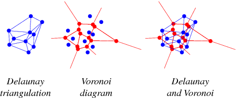

Voronoi/Delaunay triangulation
Creates a Triangulated Irregular Network (TIN) mesh for a set of input points.
The triangulation will include all points of the input layer and can be computed
by deriving either the Voronoi Diagram or it's dual, the Delaunay Triangulation.

This tool allows to triangulate layers of any geometry type (points, lines or polygons). For this to work, each layer must provide a triangulation insertion point for each of its geometries. By default, line and polygon layers will use the first vertex of each geometry.